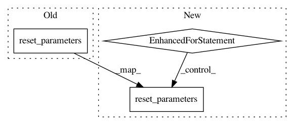

ecd54bcead758c0dff7b275202f5f1d71bf5f5f6,examples/cuneiform.py,,,#,114
Before Change
train_loader = DataLoader(train_dataset, batch_size=32, shuffle=True)
test_loader = DataLoader(test_dataset, batch_size=32, shuffle=True)
model.conv1.reset_parameters()
model.conv2.reset_parameters()
model.fc1.reset_parameters()
for epoch in range(1, 301):
After Change
test_loader = DataLoader(test_dataset, batch_size=32, shuffle=True)
accs_single = []
for _ in range(10):
model.conv1.reset_parameters()
model.conv2.reset_parameters()
model.fc1.reset_parameters()
for epoch in range(1, 301):
train(epoch)
acc = test(epoch, test_loader, " Test Accuracy")
accs_single.append(acc)
mean = torch.FloatTensor(accs_single).mean()
print("Mean", mean)
accs.append(mean)
In pattern: SUPERPATTERN
Frequency: 3
Non-data size: 3
Instances
Project Name: rusty1s/pytorch_geometric
Commit Name: ecd54bcead758c0dff7b275202f5f1d71bf5f5f6
Time: 2017-12-12
Author: matthias.fey@tu-dortmund.de
File Name: examples/cuneiform.py
Class Name:
Method Name:
Project Name: rusty1s/pytorch_geometric
Commit Name: fa3749c03627b4f230f73af4efd46932b1576475
Time: 2019-06-07
Author: ekagra.ranjan@gmail.com
File Name: benchmark/kernel/top_k.py
Class Name: TopK
Method Name: reset_parameters
Project Name: rusty1s/pytorch_geometric
Commit Name: 21e0ef24f76c8f228c6307df9b9d13cf2c611446
Time: 2019-06-07
Author: ekagra.ranjan@gmail.com
File Name: benchmark/kernel/sag_pool.py
Class Name: SAGPool
Method Name: reset_parameters